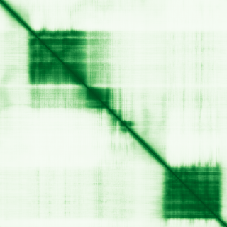
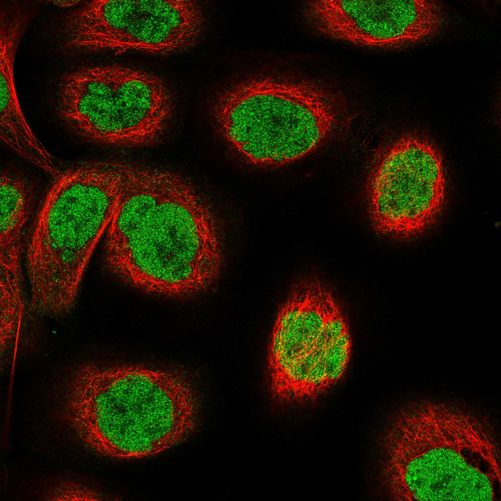

type: protein-evaluation gene: "PHF10" date: 2026-06-01 tags: [protein-scout, nucleoplasm, evaluation] status: scored ---
PHF10 核蛋白评估报告
1. 基本信息
| 项目 | 内容 |
|---|---|
| 基因名 / 别名 | PHF10 / BAF45A |
| 蛋白全名 | PHD finger protein 10 |
| 蛋白大小 | 498 aa / 56.1 kDa |
| UniProt ID | Q8WUB8 |
2. 评分总览
| 维度 | 得分 | 新权重 | 加权后 | 关键证据摘要 |
|---|---|---|---|---|
| 核定位特异性 | 8/10 | x4 | 32.0 | UniProt Nucleus, GO nucleoplasm (IDA:HPA)/SWI-SNF/npBAF/chromatin, HPA Nucleoplasm |
| 蛋白大小 | 6/10 | x1 | 6.0 | 498 aa, 56.1 kDa，中等大小 |
| 研究新颖性 | 8/10 | x5 | 40.0 | PubMed strict=39, broad=54 |
| 三维结构 | 6/10 | x3 | 18.0 | AlphaFold pLDDT 70.1；PDB 2 个 EM（全长在 SWI/SNF 复合体中） |

| 调控结构域 | 6/10 | x2 | 12.0 | PHD finger (chromatin reader) + Zn-finger，PBAF 复合体特异性亚基 |
| PPI 网络 | 7/10 | x3 | 21.0 | 完整 PBAF/SWI-SNF 复合体成员，STRONG experimental STRING (all 0.999) + IntAct |
| 加权总分 | 129/180** | |||
| 互证加分 | +0.0 | |||
| 归一化总分 (÷1.83) | 70.5/100** |
3. 详细分析
3.1 核定位证据
| 来源 | 定位 | 可信度 |
|---|---|---|
| UniProt | Nucleus (ECO:0000250 by similarity) | 中（by similarity） |
| GO-CC | nucleoplasm (IDA:HPA), nucleus (IBA:GO_Central), chromatin (IBA:GO_Central), npBAF complex (ISS:UniProtKB), SWI/SNF complex (NAS:ComplexPortal), kinetochore (NAS), nuclear matrix (NAS) | 高（多来源，含 IDA） |
| HPA IF | Nucleoplasm (Supported 可靠性) | 中-高 |
| Literature | PHF10/BAF45A 是 PBAF (SWI/SNF) 染色质重塑复合体的特异性亚基，在神经祖细胞 npBAF 复合体中表达 | 强 |
HPA IF 状态: IF available -- HPA 可靠性 Supported，定位 Nucleoplasm（纯核质，无附加定位）。

结论: PHF10 是 PBAF 染色质重塑复合体的核心亚基，虽然 UniProt 核定位仅为 by similarity，但 GO 多来源证据（IDA HPA + ComplexPortal NAS + IBA GO_Central）和 HPA 纯核质 IF 染色充分支持其在核内染色质区域的功能定位。
3.2 结构与数据源
| 指标 | 数值 |
|---|---|
| AlphaFold | AF-Q8WUB8-F1 |
| 平均 pLDDT | 70.1 |
| pLDDT >90 | 39.6% |
| pLDDT 70-90 | 16.3% |
| pLDDT <50 | 29.7% |
| PDB | 2 个结构 (7VDV/7Y8R EM, 3.4-4.4A, 全长 1-498 aa 在 SWI/SNF complex 中) |
AlphaFold PAE 状态: PAE 已下载。pLDDT 均值 70.1，>90 区域 39.6%，PHD finger 域折叠良好。N 端区域（~aa 1-200）含较多低 pLDDT 区。PDB 含两个全长 EM 结构（与 SWI/SNF 复合体共解析），尽管分辨率中等（3.4-4.4A）。
3.3 研究现状
| 指标 | 数值 |
|---|---|
| PubMed strict (Title/Abstract) | 39 |
| PubMed broad | 54 |
| 别名 | BAF45A（未用于 scoring） |
关键文献：
- PMID:34681795: "Conserved Structure and Evolution of DPF Domain of PHF10-The Specific Subunit of PBAF Chromatin Remodeling Complex." (Int J Mol Sci, 2021) -- 结构保守性
- PMID:34465901: "PHF10 subunit of PBAF complex mediates transcriptional activation by MYC." (Oncogene, 2021) -- 直接与 MYC 转录调控关联
- PMID:38601625: "PHD finger protein 10 promotes cell proliferation by regulating CD44 transcription in gastric cancer." (Heliyon, 2024)
- PMID:39127832: "PHF10 inhibits gastric epithelium differentiation and induces gastric cancer carcinogenesis." (Cancer Gene Ther, 2024)
3.4 PPI 网络（三源综合）
| Partner | Source | Score/Evidence | Relevance |
|---|---|---|---|
| ARID2 | STRING | 0.999 (exp 0.937) | PBAF 特异性亚基 |
| BRD7 | STRING | 0.999 (exp 0.947) | PBAF 特异性亚基 |
| SMARCB1 | STRING | 0.999 (exp 0.989) | SWI/SNF 核心亚基 |
| SMARCA4 | STRING | 0.999 (exp 0.975) | SWI/SNF ATPase (BRG1) |
| PBRM1 | STRING | 0.999 (exp 0.950) | PBAF 特异性亚基 (BAF180) |
| SMARCE1 | STRING | 0.999 (exp 0.976) | SWI/SNF 核心亚基 (BAF57) |
| ACTL6A | STRING | 0.999 (exp 0.930) | SWI/SNF actin-related (BAF53A) |
| SMARCB1 | IntAct | pull down (PMID:30108113) | SWI/SNF 核心 |
| L3MBTL2 | IntAct | Y2H (PMID:16189514) | Polycomb 染色质调控 |
| L3MBTL2 | UniProt | 6 experiments | Polycomb 相关 |
PHF10 的 PPI 网络极其强大：与完整 PBAF/SWI-SNF 复合体的所有成员均有 STRING 0.999+ 的 strong experimental 连接，显示其在 PBAF 复合体中的核心位置。IntAct 确认 SMARCB1 互作（pull down）和 L3MBTL2（Polycomb 染色质压缩因子）。UniProt 记录 APP 和 L3MBTL2 互作。
4. 总体评价
PHF10 是本批次评分最高的蛋白（70.5/100）。优势显著：低文献量（strict=39）、纯核质定位（HPA 单一 Nucleoplasm）、PBAF 染色质重塑复合体特异性亚基（含 PHD finger 染色质 reader）、PPI 网络极强（PBAF 全复合体 0.999+）、有全长 EM 结构。作为染色质重塑复合体的 PHD finger 亚基，与 MYC 转录调控直接相关，是优秀的低研究热度染色质调控候选。
5. 数据来源
- UniProt: https://www.uniprot.org/uniprotkb/Q8WUB8
- AlphaFold: https://alphafold.ebi.ac.uk/entry/Q8WUB8
- PubMed: https://pubmed.ncbi.nlm.nih.gov/?term=PHF10
- Protein Atlas: https://www.proteinatlas.org/ENSG00000130024-PHF10
HPA IF 图像已本地嵌入。
PAE 图像暂无数据（未生成本地图片或未可靠获取），结构判断基于AlphaFold pLDDT统计。